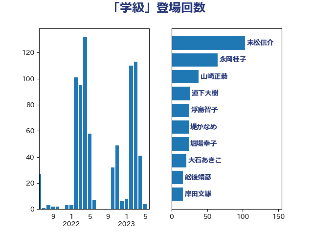

単語「学級」

| 末松信介 | 自由民主党 | 103 回 |
| 永岡桂子 | 自由民主党 | 65 回 |
| 山崎正恭 | 公明党 | 38 回 |
| 道下大樹 | 立憲民主党 | 26 回 |
| 浮島智子 | 公明党 | 25 回 |
| 堤かなめ | 立憲民主党 | 24 回 |
| 堀場幸子 | 日本維新の会 | 24 回 |
| 大石あきこ | れいわ新選組 | 21 回 |
| 舩後靖彦 | れいわ新選組 | 16 回 |
| 岸田文雄 | 自由民主党 | 16 回 |
| 古賀千景 | 立憲民主党 | 15 回 |
| 伊藤孝江 | 公明党 | 15 回 |
| 櫻井周 | 立憲民主党 | 14 回 |
| 木村英子 | れいわ新選組 | 13 回 |
| 西岡秀子 | 国民民主党 | 12 回 |
| 斎藤嘉隆 | 立憲民主党 | 11 回 |
| 宮路拓馬 | 自由民主党 | 10 回 |
| 水岡俊一 | 立憲民主党 | 9 回 |
| 宮口治子 | 立憲民主党 | 9 回 |
| 鰐淵洋子 | 公明党 | 7 回 |
| 白石洋一 | 立憲民主党 | 6 回 |
| 漆間譲司 | 日本維新の会 | 6 回 |
| 河西宏一 | 公明党 | 6 回 |
| 鈴木俊一 | 自由民主党 | 5 回 |
| 本村伸子 | 日本共産党 | 5 回 |
| 早稲田ゆき | 立憲民主党 | 5 回 |
| 吉良よし子 | 日本共産党 | 5 回 |
| 伊藤孝恵 | 国民民主党 | 5 回 |
| 萩生田光一 | 自由民主党 | 4 回 |
| 片山大介 | 日本維新の会 | 4 回 |
| 星北斗 | 自由民主党 | 4 回 |
| 五十嵐清 | 自由民主党 | 4 回 |
| 高見康裕 | 自由民主党 | 3 回 |
| 西村康稔 | 自由民主党 | 3 回 |
| 蓮舫 | 立憲民主党 | 3 回 |
| 稲津久 | 公明党 | 3 回 |
| 田村智子 | 日本共産党 | 3 回 |
| 湯原俊二 | 立憲民主党 | 3 回 |
| 池田佳隆 | 自由民主党 | 3 回 |
| 柴山昌彦 | 自由民主党 | 3 回 |
| 柚木道義 | 立憲民主党 | 3 回 |
| 中島克仁 | 立憲民主党 | 3 回 |
| 一谷勇一郎 | 日本維新の会 | 3 回 |
| 阿部司 | 日本維新の会 | 2 回 |
| 鎌田さゆり | 立憲民主党 | 2 回 |
| 金村龍那 | 日本維新の会 | 2 回 |
| 谷田川元 | 立憲民主党 | 2 回 |
| 西村智奈美 | 立憲民主党 | 2 回 |
| 簗和生 | 自由民主党 | 2 回 |
| 篠原豪 | 立憲民主党 | 2 回 |
| 田村憲久 | 自由民主党 | 2 回 |
| 森山浩行 | 立憲民主党 | 2 回 |
| 枝野幸男 | 立憲民主党 | 2 回 |
| 松野明美 | 日本維新の会 | 2 回 |
| 掘井健智 | 日本維新の会 | 2 回 |
| 後藤茂之 | 自由民主党 | 2 回 |
| 岬麻紀 | 日本維新の会 | 2 回 |
| 山本博司 | 公明党 | 2 回 |
| 小野泰輔 | 日本維新の会 | 2 回 |
| 小倉將信 | 自由民主党 | 2 回 |
| 太栄志 | 立憲民主党 | 2 回 |
| 嘉田由紀子 | 無所属 | 2 回 |
| 勝部賢志 | 立憲民主党 | 2 回 |
| 伊佐進一 | 公明党 | 2 回 |
| 井上貴博 | 自由民主党 | 2 回 |
| 高野光二郎 | 自由民主党 | 1 回 |
| 高橋光男 | 公明党 | 1 回 |
| 阿部知子 | 立憲民主党 | 1 回 |
| 鈴木貴子 | 自由民主党 | 1 回 |
| 野間健 | 立憲民主党 | 1 回 |
| 野田国義 | 立憲民主党 | 1 回 |
| 菊田真紀子 | 立憲民主党 | 1 回 |
| 竹内真二 | 公明党 | 1 回 |
| 牧義夫 | 立憲民主党 | 1 回 |
| 源馬謙太郎 | 立憲民主党 | 1 回 |
| 渡辺創 | 立憲民主党 | 1 回 |
| 島村大 | 自由民主党 | 1 回 |
| 岸真紀子 | 立憲民主党 | 1 回 |
| 岩渕友 | 日本共産党 | 1 回 |
| 岡本あき子 | 立憲民主党 | 1 回 |
| 山岸一生 | 立憲民主党 | 1 回 |
| 宮本岳志 | 日本共産党 | 1 回 |
| 大野敬太郎 | 自由民主党 | 1 回 |
| 塩田博昭 | 公明党 | 1 回 |
| 城井崇 | 立憲民主党 | 1 回 |
| 吉田久美子 | 公明党 | 1 回 |
| 勝目康 | 自由民主党 | 1 回 |
| 倉林明子 | 日本共産党 | 1 回 |
| 佐々木さやか | 公明党 | 1 回 |
| 上野通子 | 自由民主党 | 1 回 |
| 三木圭恵 | 日本維新の会 | 1 回 |